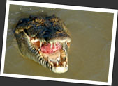
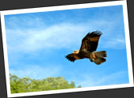
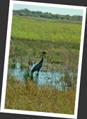
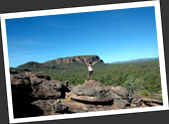
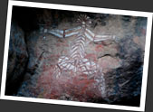

第六章
一睹野生巨鱷
要數澳洲北部熱帶地區最有名的動物，相信非"鱷魚先生"一戲內的鱷魚莫屬了！事實上，澳洲生活著兩種鱷魚．一種是體形較小，頭部尖長的淡水鱷魚 "Freshie"，另一種則是危險性極高，會吃人的咸水鱷魚 "Salty"．為了安全，澳洲北部的水道旁邊大多寫上提防鱷魚的警告牌．不過鱷魚襲擊人類的新聞還是時有聽聞．我在遊覽 Kakadu 之時，就聽說前幾天有個闖進水潭的比利時背包族給鱷魚吃掉，消失於人間！
我有機會到 Adelaide River 一睹會跳的野生巨鱷，還因為遊人太多，被編上了臨時開動的小船，和鱷魚近距離接觸！估不到短短一段河段中，躲藏在水中沼澤中的鱷魚數目居然如此多！大小不一但都很貪婪的鱷魚聽到水中的拍打聲，嗅到水中的血腥味，便紛紛遊到船邊，露出邪惡的雙眼，侍機張口吞噬綁在繩上的那塊肉．我想說，當一條身長四米的野生雄性鱷魚游到你的小船旁邊，到了伸手可及的距離，看牠打量著你，把你看成是蛋白質豐富的一頓美食之時，那種血脈沸騰的感覺是別些東西不能帶給你的．
除了留意水中鱷魚，還得抬頭望著天空中那群在不斷盤旋的魚鷹．導遊把一小塊肉拋向空中，目光銳利的魚鷹立時俯衝下來，凌空一抓，就把空中的肉塊撲住．牠們動作之靈巧，空中滑翔速度之快，直教人大開眼界．
水鳥的世界
走進 Kakadu 之前，我們到了 Fogg Dam Conservation Reserve．這兒從前是一塊種植稻米的實驗農地，如今則變成了一個野生動物的天堂，有點像我們香港的米埔．看著沼澤水鳥，感受著自然的生命力．咦？我怎麼好像沒有去過我們自家的米埔？
卡卡都國家公園 Kakadu National Park
北澳的重量級景點卡卡都國家公園 (Kakadu National Park)，是被教科文定為自然與及文化上的世界遺產，是科學及土著文化上的一個寶庫．這兒有著澳洲最重要的土著文化考古地點，有著北澳熱帶珍貴稀有的動植物，更加蘊藏著大量的鈾元素！彼鄰遼闊原始的土著據地 Arnhem Land．若果有人執意要找尋"真正的澳洲"，這兒便是了．
Kakadu 像個千變的姑娘，在一年的雨季和旱季有著截然不同的景觀．雨季來臨時，萬物生氣蓬勃，河水氾濫使很多地方變成一片澤國．不少通往景點的土路都會被沖掉，因此路要每年建一次！在旱季，水量少得可以把最奔騰的大瀑布變成乾涸，乾燥的氣候更加會引發大山火．澳洲人於是應用了土著古老而聰明的受控燒樹方法，減輕了發生大火災的機會．Kakadu 是一個巨大的生命體，有著千變萬化的姿態，一般人難以一窺全貌．我以為自己捕捉到雨季剛過，旱季剛來這最佳時間參觀 Kakadu，卻原來早了一個月．氾濫的河水尚未完全退卻，很多最著名的景點如 Jim Jim Falls, Twin Falls 等我都與之無緣．
我們的導遊叫 Jack，是個外表斯文有禮，但卻擁有鱷魚先生般身手的澳洲人．他對 Kakadu 內的動植物有很豐富的知識，又對土著文化瞭如指掌，更加會教我們玩 dideridoo！我們一路上找尋野生動物，雖然沒有看見鱷魚及 Wallaroo，但看見甚麼毒蛇蜘蛛，他都有能力把牠拿起來向我們展示，更即場示範如何吃掉樹蟻帶酸甜味道的尾巴！來到 Nourlangie 看土著壁畫，Jack 把一個個神話故事娓娓道來．望著一個個造形原始古怪的土著神像，我對 Jack 說，這兒的壁畫比起我在 Uluru 看見的精彩豐富多了！Jack 反過來告訴我，壁畫的意義不在乎它的畫功有多仔細，而是在於它年代久遠呀！
走在樹林間，看著在天空自由飛翔的大鸚鵡 Black Cockatoo．徒潛於各個大小水潭，看著水草瓢瓢，呎來長的大魚在身邊游過．躺於溪澗旁邊的大石上晒太陽，再沿瀑布爬到谷頂，望著看不見盡頭的原始森林......大自然多美．